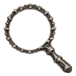
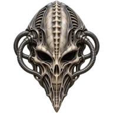
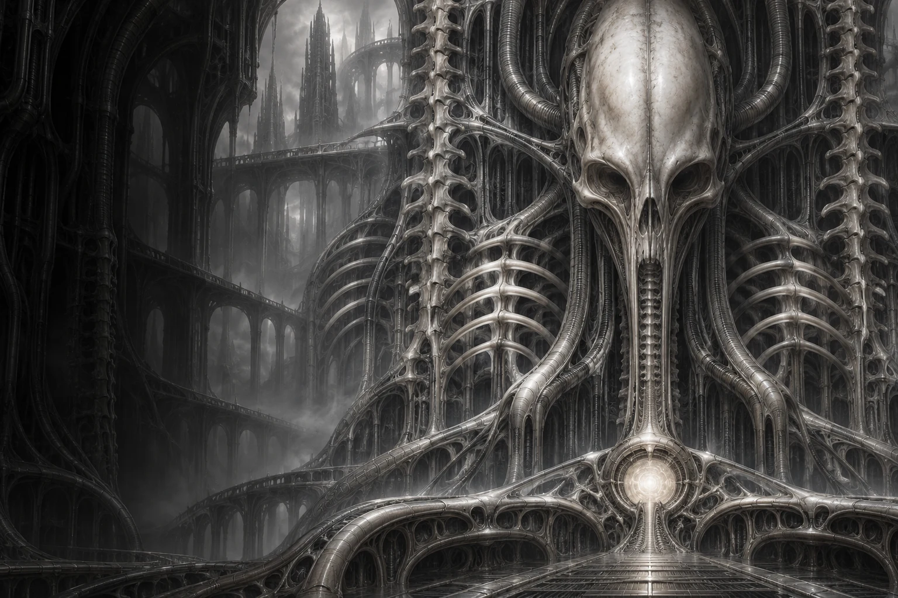
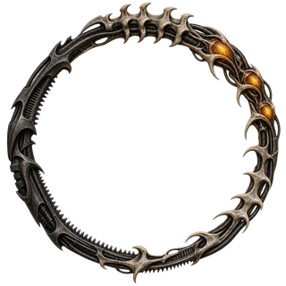

03 NEURAL INPUT

/Three specimens. One shared consciousness.

An interface between the organic and the machine.
Touch the surfaces. Wake what sleeps within.

A sanctuary with a pulse.
Press the skull to awaken the vessel.
Press again to return it to stasis.

/The organism is aware of your presence.
JUST NOWBone, chrome, and blackened metal. Each surface is an artifact; each control, an organism.
Wake the vessel, tune its resonance, or follow its neural scan. Every control changes the living specimen.
Open a specimen to inspect the full artwork, or download the original image from the viewer.

Set the organism in motion.
LOCAL NEURAL SEQUENCENeither entirely human.
Nor entirely machine.